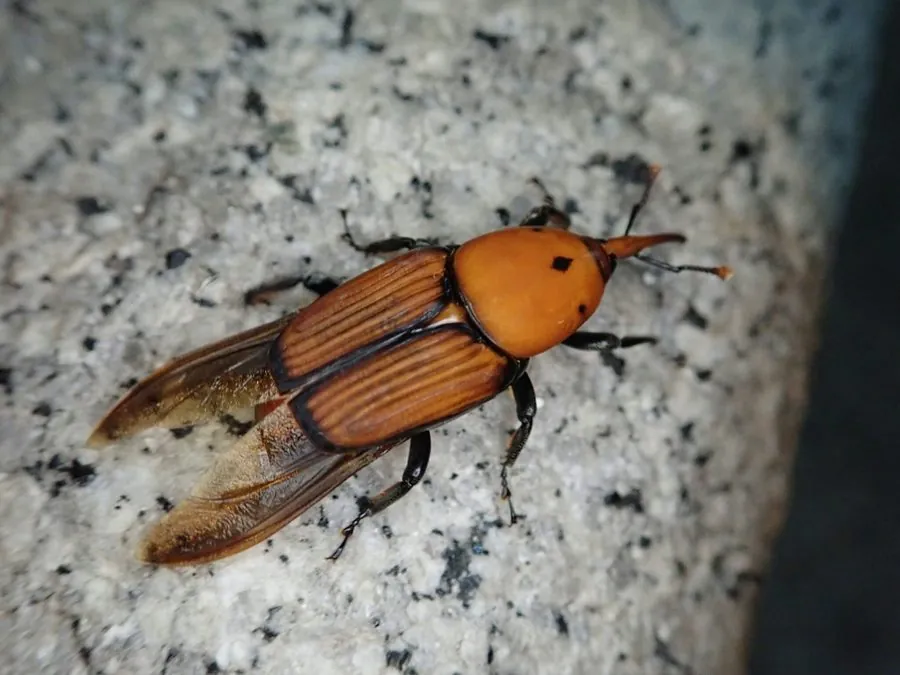

昆虫 · 动物界
红棕象甲 Rhynchophorus ferrugineus

危害棕榈科植物的重大入侵害虫，成虫红褐色、吻部细长，幼虫蛀食树干内部，常导致整株棕榈枯死。
- 分类
- 门节肢动物门纲昆虫纲目鞘翅目科象甲科属棕榈象属
- 栖息环境
- 椰子树、海枣树、棕榈树等棕榈科植物的树干与叶柄基部
- 地理分布
- 原产东南亚；扩散至中东、北非、南欧及中国南方
- 保护级别
- IUCN 暂无评估；中国外来入侵物种，无保护级别
物种志
红棕象甲体长 2.5–4 厘米，身体呈红褐色或橙褐色，鞘翅上有黑色的斑点与纵纹，头部前方延伸出细长的吻部，足粗壮有力。它体型较大，是棕榈科植物上最具破坏性的害虫之一。
它原产于东南亚，现已随苗木贸易扩散到中东、北非、南欧和中国南方，被列入中国外来入侵物种名单和全球重点检疫性害虫。成虫多在树干基部或叶柄缝隙产卵，幼虫孵化后蛀入树干内部取食柔软组织，形成大量蛀道，导致树干中空、腐烂，并散发出发酵气味，严重时整株棕榈枯死。它一年可发生 2–4 代，雌虫可产卵 300 枚以上。防控上应严格检疫进口棕榈苗木、及时清除并销毁受害植株、使用诱捕器监测成虫，目前尚无彻底根除的方法。
形态与习性
- 食性幼虫蛀食棕榈树干内部柔软组织
- 体长2.5–4 cm
- 寿命成虫约 1–2 个月，一年 2–4 代
- 繁殖卵生，雌虫产卵 300 枚以上于树干缝隙
- 活动节律成虫善飞，多在树干附近活动
- 危害蛀道导致树干中空腐烂，严重时整株棕榈枯死
趣味知识
- 红棕象甲幼虫在树干内部蛀食，外表很难看出异常，发现时往往已很严重。
- 它是全球重点检疫性害虫，随棕榈苗木贸易扩散到许多国家。
- 清除并销毁受害棕榈植株，是阻止红棕象甲扩散的关键措施。